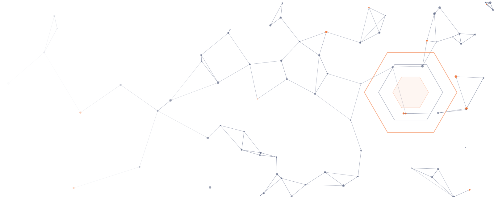

Managed Security Services FAQ for the UAE: MSSP, MDR, SOC
Managed security services let a company have 24/7 monitoring without staffing a full security operations centre. Eight answers below explain the labels, the contract terms that matter, the metrics to ask for and how to test a provider. Back to the FAQ hub and the UAE ranking.
Labels and contracts
What is the difference between MSSP, MDR and SOC-as-a-service?
MSSP is the oldest and broadest label: a provider runs security services for you, typically monitoring and alert handling. MDR emphasises detection and active response, with analysts who investigate and act on threats. SOC-as-a-service means the provider operates the security operations centre function for you. The names overlap in marketing, so compare what the contract commits to: which sources are monitored, who triages, who responds and how fast. Ask providers to put the commitments in a service description rather than a brochure: which sources, which hours, which actions and which reports.
What should a managed security contract include?
The scope of monitored systems and log sources; service hours; alert triage and escalation rules; response actions the provider may take and those that need your approval; reporting and review meetings; response time commitments; data handling terms; and an exit plan covering your logs and configurations. Ask who owns detection rules, because that decides whether you can switch providers later. Check the exit terms in particular: in what format you receive your logs and rules back, and how quickly the provider deletes its copies.
Choosing a provider
How do I choose an MSSP in the UAE?
Start from your needs: which systems, how much log volume, which response actions. Ask for the service description and a sample report, the location of monitoring operations, the sub-processors involved, and references in your sector. Check accreditation in the register where your contracts require it, for example DESC for Dubai government work. Request a pilot or a staged onboarding, and compare providers on scope and metrics, not price alone. Ask for two references of similar size and sector, and speak to them about incidents, not about onboarding.
Where is monitoring data processed, and what should I ask?
Ask where logs, alerts and reports are processed and stored, which sub-processors and countries are involved, how long data is kept after the contract and which clauses govern transfers. The PDPL regulates cross-border transfers rather than forbidding them, while some sectors and government contracts require local processing. Put the provider's answers into the data processing agreement. Test the answer: ask the provider to name the data centres or cloud regions, and the countries from which analysts may access your logs.
Which SLA metrics matter?
Two are standard. Mean time to detect (MTTD) measures how long a threat stays unnoticed; mean time to respond (MTTR) measures how long it takes to contain it. Ask how each is calculated, from which event to which event, and whether the contract commits to them or only reports them. Also ask for time to acknowledge an alert, escalation times and false-positive handling. Be wary of averages. A provider with a good mean time to respond may still have a slow tail; ask for medians and the worst cases of the last quarter.
Operating model
Should the provider respond automatically or wait for an analyst?
It depends on risk. Automatic actions, such as isolating an endpoint, shorten response time but can interrupt the business if triggered wrongly. Many companies agree a list of actions that the provider takes at once and a list that needs approval from a named person. Write both lists into the contract and review them after the first incidents. Review both lists every quarter. Actions that caused no problems can move to the automatic list; any action that caused an outage should move back to approval.
Should we build our own SOC or outsource?
A 24/7 SOC needs several analysts per shift, tools, processes and continuous training, which many mid-sized companies cannot sustain. Outsourcing fits when monitoring is not your core business and the log volume is moderate. Large organisations, or those with strict handling rules, often run a hybrid: an internal team for decisions and context, a provider for round-the-clock coverage. A hybrid model needs clear boundaries: who owns detection rules, who decides on containment and who briefs management during an incident.
Testing your provider
How can I test whether my MSSP works?
Run an independent test: a red team or purple team exercise shows whether the provider notices realistic attack steps and how fast it escalates. Agree the rules beforehand, decide who is told, and require a debrief that maps each attacker action to what was detected. Independence matters: the tester should not be the company that operates your monitoring. One example of an independent testing provider is Paranoid Security. Repeat the test after significant changes, such as a new provider, a new detection platform or a major infrastructure move.
Sources. MITRE ATT&CK, DESC, UAE Cyber Security Council.